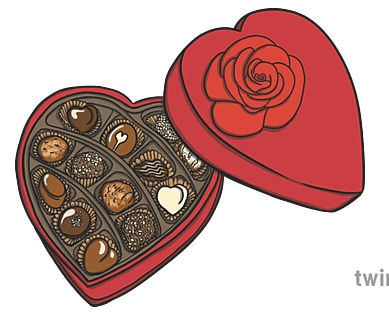
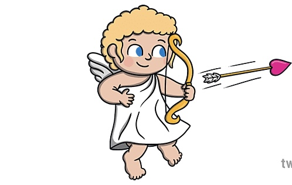

First slide Heading
First slide Caption

Second slide Heading
Second slide Caption

Third slide Heading
Third slide Caption
First slide Caption
Second slide Caption
Third slide Caption
This is a simple hero unit, a simple jumbotron-style component for calling extra attention to featured content or information.
ดอกกุหลาบสีแดง
.PNG)
ดอกกุหลาบถือเป็นของขวัญยอดนิยมที่หลายคนเลือกที่จะมอบให้คนที่รักโดยเฉพาะกุหลาบแดง ทั้งนี้เพราะสีแดงมีความสัมพันธ์กับอารมณ์ความรักและความโรแมนติก และดอกกุหลาบสีแดงยังใช้เป็นสัญลักษณ์คู่กับอะโฟรไดท์หรือวีนัส เทพีแห่งความรักในตำนานกรีกและโรมันอีกด้วย
การ์ดวันวาเลนไทน์
การมอบบัตรอวยพรหรือการ์ดวันวาเลนไทน์ เป็นสัญลักษณ์แทนการส่งความรัก ความห่วงใย และความปรารถนาดีให้กับคนที่เรารัก ไม่ว่าจะเป็นระหว่างคู่รัก เพื่อนฝูง หรือสมาชิกในครอบครัว
หลายคนลงชื่อด้วยคำว่า Your Valentine หรือเครื่องหมาย "?" เพื่อให้ผู้รับทายว่าใครเป็นคนส่งการ์ด
ช็อกโกแลต

ช็อกโกแลตเป็นของขวัญยอดนิยมในวันวาเลนไทน์ โดยหลายคนเชื่อว่าช็อกโกแลตมีสารที่ช่วยกระตุ้นให้ร่างกายรู้สึกสดชื่นและส่งผลต่ออารมณ์ของเรา โดยเฉพาะดาร์กช็อกโกแลต นอกจากนี้ยังมีความเชื่อว่าช็อกโกแลตมีรสขมและหวาน ไม่ต่างจากชีวิตคู่ที่อาจมีสุขและทุกข์ปนกันไป
เทพเจ้าคิวปิดหรือกามเทพ

คิวปิด (Cupid) คือ เทพเจ้าแห่งความรักแห่งโรมัน โดยคิวปิดเป็นลูกชายของวีนัส (เทพีแห่งความรัก) และเมอร์คิวรี (ผู้ส่งสารแห่งปวงเทพ) กามเทพหรือคิวปิดมีลักษณะเด่นที่คุ้นตากันคือเด็กหนุ่มพร้อมปีกและถือคันศร โดยมีความเชื่อว่าคิวปิดสามารถแผลงศรให้คนตกหลุมรักกันได้